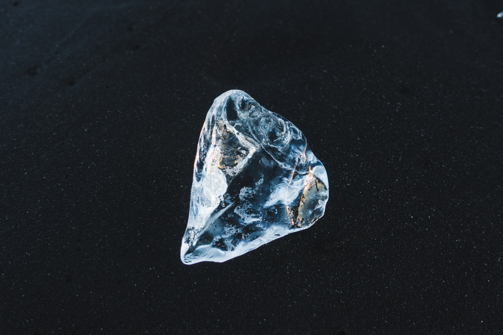
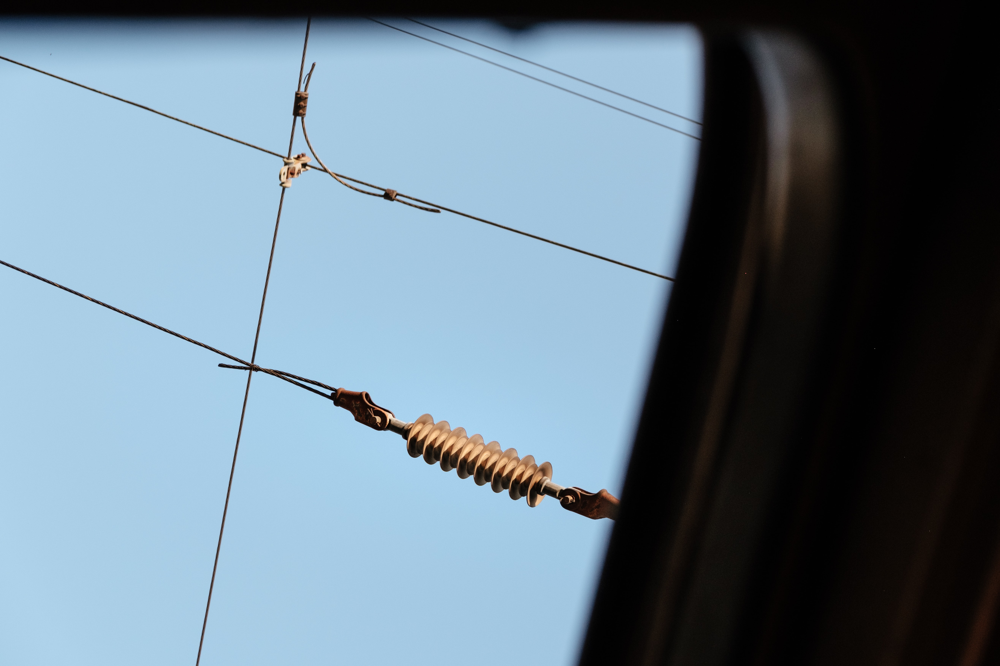

Características de la materia🧪
Aprende las distintas características de los materiales de la tierraPuntos clave:
Definición
Son el conjunto de características que hacen que un material se comporte de determinada manera ante estímulos externos como la luz, el calor, las fuerzas, etc. Todos los materiales tienen propiedades que los hacen únicos y más adecuados para ciertos usos que otros.
Maleabilidad
Es la capacidad de un material de deformarse sin quebrarse. Esto quiere decir que si se le ejerce fuerza, el material puede moldearse sin romperse. Los materiales con esta propiedad se caracterizan por tener la capacidad de extenderse en láminas delgadas. Esto hace a los materiales maleables útiles para soldaduras debido a su plasticidad. Un ejemplo de un material maleable es el aluminio, que permite hacer lo que se conoce como papel de aluminio, que en realidad son láminas delgadas del material.

Ductilidad
Es la capacidad de un material de deformarse sin quebrarse. Esto quiere decir que si se le ejerce fuerza, el material puede moldearse sin romperse. Los materiales con esta propiedad se caracterizan por tener la capacidad de extenderse en láminas delgadas. Esto hace a los materiales maleables útiles para soldaduras debido a su plasticidad. Un ejemplo de un material maleable es el aluminio, que permite hacer lo que se conoce como papel de aluminio, que en realidad son láminas delgadas del material.
Dureza
Es el grado de resistencia que un material opone al rayado por parte de otro material. Esto quiere decir que los materiales más duros son resistentes a ser dañados por otro material. La dureza se mide en una escala del 1 al 10, siendo el diamante el material más duro y el talco el más suave.
Tenacidad
La tenacidad es la cantidad de energía que un material puede absorber antes de quebrarse. Esto quiere decir que los materiales tenaces pueden resistir una gran cantidad de fuerza sin romperse. Un ejemplo de un material tenaz es la madera ya que es capaz de resistir una gran cantidad cantidades de fuerza antes de quebrarse.

Conductividad eléctrica
Es la capacidad de un material para transmitir la corriente eléctrica a través de él. Existen materiales con un nivel mayor de conductividad que otros. Un ejemplo de un material con alta conductividad eléctrica es el cobre, que se usa en cables comunes.
